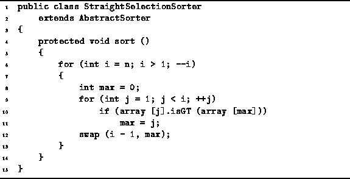

Data Structures and Algorithms
with Object-Oriented Design Patterns in Java
Data Structures and Algorithms
with Object-Oriented Design Patterns in Java
Program  defines
the StraightSelectionSorter class.
This class is derived from the AbstractSorter base
defined in Program
and it provides an implementation for the no-arg sort method.
The sort method follows directly from the algorithm discussed above.
In each iteration of the main loop (lines 6-13),
exactly one element is selected from the unsorted elements
and moved into the correct position.
A linear search of the unsorted elements is done in order
to determine the position of the largest remaining element (lines 9-11).
That element is then moved into the correct position (line 12).
defines
the StraightSelectionSorter class.
This class is derived from the AbstractSorter base
defined in Program
and it provides an implementation for the no-arg sort method.
The sort method follows directly from the algorithm discussed above.
In each iteration of the main loop (lines 6-13),
exactly one element is selected from the unsorted elements
and moved into the correct position.
A linear search of the unsorted elements is done in order
to determine the position of the largest remaining element (lines 9-11).
That element is then moved into the correct position (line 12).

Program: StraightSelectionSorter class sort method.
In all n-1 iterations of the outer loop are needed to sort the array. Notice that exactly one swap is done in each iteration of the outer loop. Therefore, n-1 data exchanges are needed to sort the list.
Furthermore, in the  iteration of the outer loop,
i-1 iterations of the inner loop are required
and each iteration of the inner loop does one data comparison.
Therefore,
iteration of the outer loop,
i-1 iterations of the inner loop are required
and each iteration of the inner loop does one data comparison.
Therefore,  data comparisons are needed to sort the list.
data comparisons are needed to sort the list.
The total running time of the straight selection
sort method is  .
Because the same number of comparisons and swaps are always done,
this running time bound applies in all cases.
That is, the best-case, average-case and worst-case
running times are all
.
Because the same number of comparisons and swaps are always done,
this running time bound applies in all cases.
That is, the best-case, average-case and worst-case
running times are all  .
.
 Copyright © 1998 by Bruno R. Preiss, P.Eng. All rights reserved.
Copyright © 1998 by Bruno R. Preiss, P.Eng. All rights reserved.